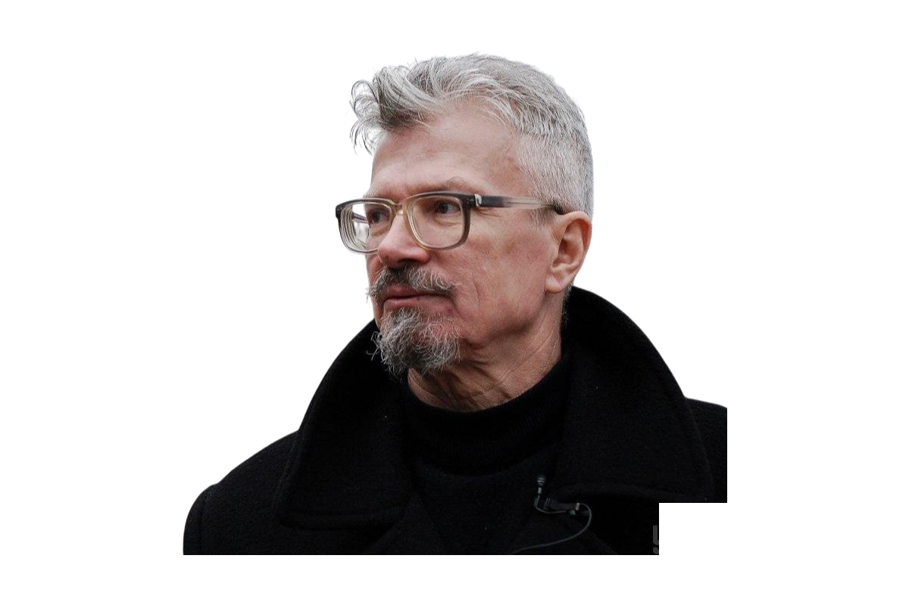

Защитить жителей Новороссии.
Воссоединить русский народ в Большой России.
6 мая 2014 года сторонники Эдуарда Лимонова выпустили обращение к народу России. С этого обращения началась история добровольческого движения «Интербригады».
В качестве ополченцев, а с началом СВО — в составе Армии России, добровольцы Интербригад с оружием в руках ведут борьбу с русофобским режимом Украины. Наши цели не изменились — защитить жителей Донбасса и других регионов Новороссии, низвергнуть враждебную России государственность, воссоединить наш самый разделённый в мире народ в Большой России.
Интербригады — горизонтальная сеть людей, связанных общей целью. Мы работаем по принципу полного цикла: от отбора добровольца до его снаряжения и отправки. Параллельно действует Интерпром — сеть народных производств по помощи добровольцам. Военные корреспонденты Интербригад освещают конфликт с самого начала СВО.
Помощь мирным жителям освобождённых территорий и восстановление гражданской инфраструктуры Донбасса.
Отправка добровольцев с оружием в руках на защиту Донбасса и освобождённых территорий
Производство и доставка необходимого бойцам и мирному населению
Ремонт и восстановление гражданской инфраструктуры в освобождённых городах и сёлах
Военная корреспондентика, увековечение погибших добровольцев
Само название «интербригады» отсылает к Испанской гражданской войне 1936–1939 годов — когда 35 000 добровольцев из 53 стран встали на защиту республики против фашизма. Это первый в истории опыт организованного интернационального добровольческого движения, основанного не на контракте, а на убеждении.
Прообраз движения. Тысячи добровольцев из СССР, Франции, Германии, США сражались в рядах интербригад. Они дали миру модель: добровольчество, основанное на политических убеждениях, а не на деньгах.
Сторонники Эдуарда Лимонова выпускают обращение к народу России. В Донбасс начинают ехать первые добровольцы «Другой России». Интербригады создаются как организованная структура поддержки ополчения ДНР и ЛНР.
Движение продолжает работу в условиях «замороженного» конфликта: ротации добровольцев, гуманитарные поставки, документирование происходящего. Накапливается опыт, выстраиваются связи с подразделениями.
С 24 февраля 2022 года движение переходит в полный операционный режим. Добровольцы вступают в ряды Армии России. Разворачиваются производственные мастерские: Донецкая, Ленинградская, московский Цех 77 и другие.
Сеть Интерпрома охватывает 9 городов. Шесть направлений работают одновременно. За 2025 год произведено 68 321 изделие для нужд Армии. Движение присутствует непосредственно в зоне СВО.

«Россия — это цивилизация, а не просто государство. И защищать её — значит защищать особый способ существования человека.»
Эдуард Вениаминович Лимонов — писатель, политик, основатель Национал-большевистской партии (НБП)* и движения «Другая Россия» — был одним из немногих российских деятелей, последовательно отстаивавших право народов самоопределяться с оружием в руках.
Именно его сторонники создали Интербригады 6 мая 2014 года. Лимонов лично поддерживал добровольцев Донбасса задолго до 2022 года, открыто говорил о необходимости воссоединения русского народа и последовательно критиковал украинский национализм как проект, направленный против русских.
Идея Лимонова о том, что русская политическая энергия должна конвертироваться в конкретные действия на местности, а не в митинги у стен Кремля, стала идеологическим основанием движения. Интербригады — это его политика в действии.
Лимонов умер 17 марта 2020 года, не дожив до СВО. Но всё, что он писал о русском мире, о добровольческом духе и интербригадовской солидарности, — реализуется сейчас теми, кто его читал.
* Национал-большевистская партия (НБП) — деятельность организации запрещена на территории Российской Федерации по решению суда.
Интербригады организуют полный путь добровольца: личное собеседование, оценка мотивации и специальности, помощь с документами, координация с подразделением, сопровождение до места.
Среди добровольцев — бывшие военные, медики, инженеры, строители. Каждый находит применение там, где его компетенции нужны больше всего. Нацболы из регионального актива «Другой России» составляют ядро движения.
Доброволец без снаряжения — это проблема, а не помощь. Интербригады обеспечивают тех, кто едет на фронт: тактическое снаряжение, СИЗ, медаптечки IFAK, средства связи, дроновое оборудование.
Снаряжение закупается напрямую у проверенных производителей и частично производится в мастерских Интерпрома. Выдаётся адресно — под конкретного человека и его боевую задачу.
Донецкая мастерская — флагманское производство Интербригад прямо в зоне СВО. Здесь производятся маскировочные сети, окопные свечи, блиндажные изделия, носилки, оборудование для укрытий.
Параллельно работают мастерские в Ленинграде, Нижнем Новгороде, Москве (Цех 77), Саранске, Краснодаре, Красноярске, Барнауле, Оренбурге. Все изделия передаются подразделениям бесплатно по заявкам.
Интербригады работают с мирным населением прифронтовых и освобождённых территорий: продукты, медикаменты, предметы первой необходимости туда, куда не доходит государственная помощь. Адресно — по конкретным семьям и адресам.
Отдельное направление — помощь вынужденным переселенцам: жильё, документы, адаптация, детское питание. Наши координаторы на местах знают людей по именам.
Освободить город — только начало. Дальше нужно сделать так, чтобы в нём можно было жить. Интербригады участвуют в восстановлении гражданской инфраструктуры: кровля, отопление, окна, водоснабжение, дороги.
Строительные бригады из добровольцев работают на конкретных объектах. Приоритет — социальные объекты: школы, больницы, жилые дома. Каждый объект документируется: фото до и после.
Правда о войне умирает первой, если её не фиксировать. Наши журналисты и блогеры работают непосредственно на передовой: сопровождают штурмовые группы, документируют быт бойцов и судьбы людей в прифронтовых сёлах.
Они не дистанционные комментаторы. Интербригады обеспечивают корреспондентов снаряжением и безопасностью. Материалы распространяются через канал и передаются партнёрским СМИ.
Все изделия передаются подразделениям в зоне СВО бесплатно по заявкам.
* Данные по Интерпрому — из официального отчёта за 2025 год. Статистика обновляется.
Помочь можно не только оружием и гуманитаркой — но и знанием. Особенно детям, которые растут в условиях войны.
Русская школа — образовательное направление Интербригад. Мы организуем занятия в прифронтовых районах и среди переселенцев: русский язык, история, основы безопасности, творческие занятия. Педагоги-добровольцы из разных регионов России едут работать с детьми.
Параллельно — направление для взрослых: основы первой помощи, правила поведения в условиях боевых действий, психологическая устойчивость, практические навыки выживания.
Русский язык, история, творческие занятия, психологическая реабилитация через игру и искусство
Первая медицинская помощь, правила безопасности в зоне конфликта, адаптация
Базовая подготовка перед отправкой, тактическая медицина, ориентирование
Лучшая оценка нашей работы — слова тех, кому мы помогали. Официальные грамоты от воинских подразделений и благодарственные письма от бойцов.
Интербригады — это люди. Не логотип, не структура, не аббревиатура. За каждым направлением стоит конкретный человек с именем, биографией и причиной, по которой он здесь.
[Биография и путь в движении]
[Биография и путь в движении]
[Биография и путь в движении]
[Биография и путь в движении]
Они шли добровольно. Они знали, на что идут. Они выбрали это сами.
Мы считаем своим долгом помнить каждого по имени.
Вечная память. Вечная слава.
Интербригады — часть широкой экосистемы военно-гражданского взаимодействия. Мы работаем в партнёрстве с организациями, которые разделяют наши ценности и дополняют наши возможности.
Если вы хотите поехать на фронт или работать волонтёром — напишите нам через бота. Расскажем о процессе отбора и возможностях.
Написать в ботЛюбая сумма имеет значение. Деньги идут напрямую на снаряжение добровольцев. Отчёты публикуются открыто в канале.
РеквизитыМастерские Интерпрома принимают волонтёров. Шить, плести, собирать, упаковывать — специальные навыки не нужны, нужно желание.
Написать в ботБензин, аренда мастерских, орграсходы — то, без чего движение не работает. Отдельный сбор для поддержки инфраструктуры.
РеквизитыТактическое снаряжение, медикаменты, стройматериалы, инструмент — если есть что передать, напишите нам. Доставим туда, где нужно.
Написать в ботПодпишитесь на наш Telegram-канал и группу ВКонтакте. Делитесь материалами. Рассказывайте о нас. Это тоже помощь.
Telegram-каналБензин, аренда мастерских, операционные расходы движения